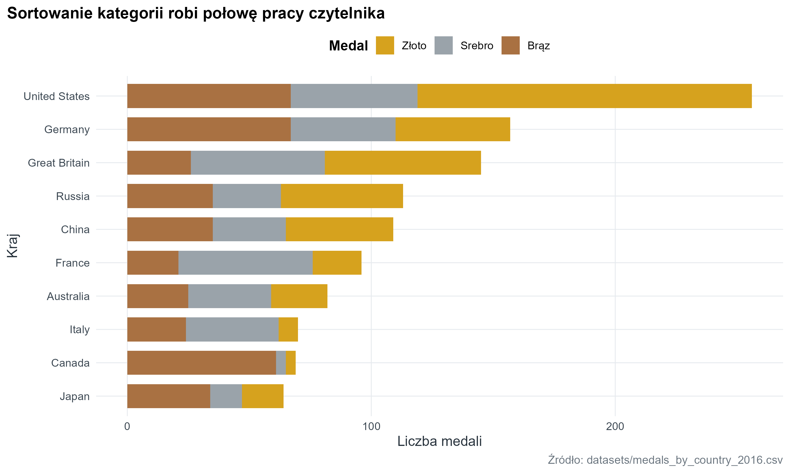
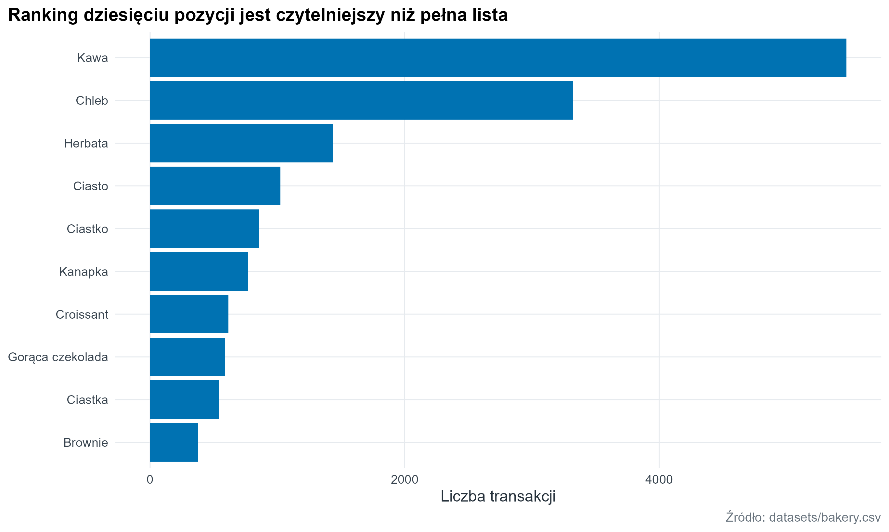
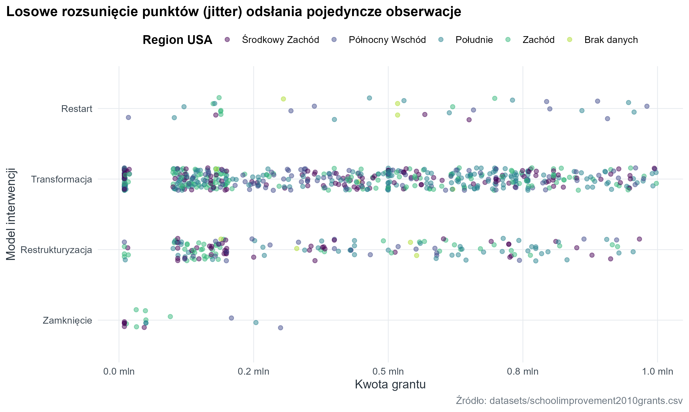
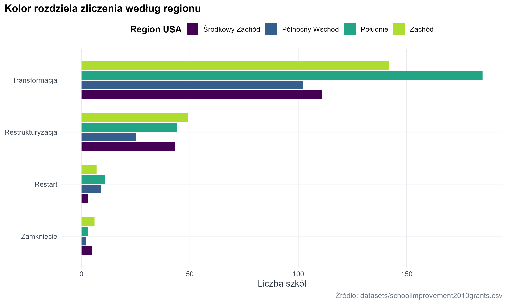
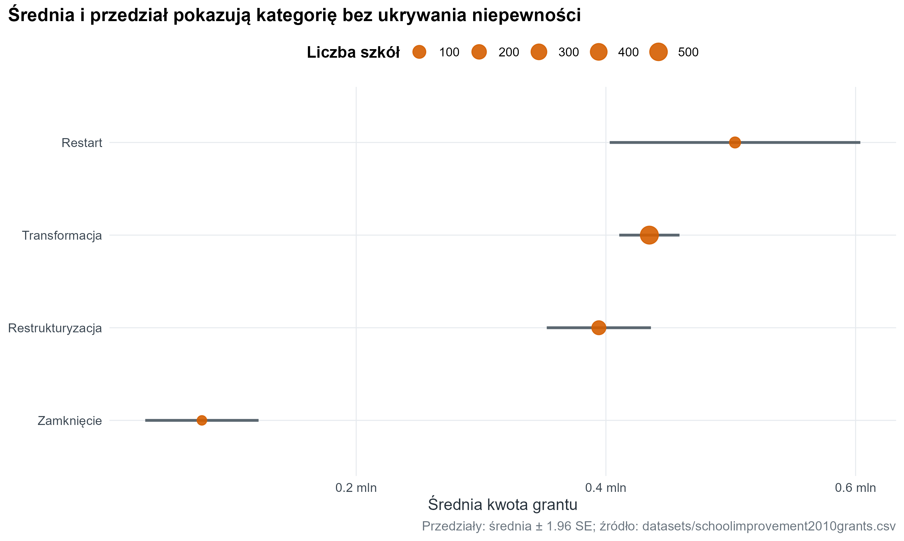
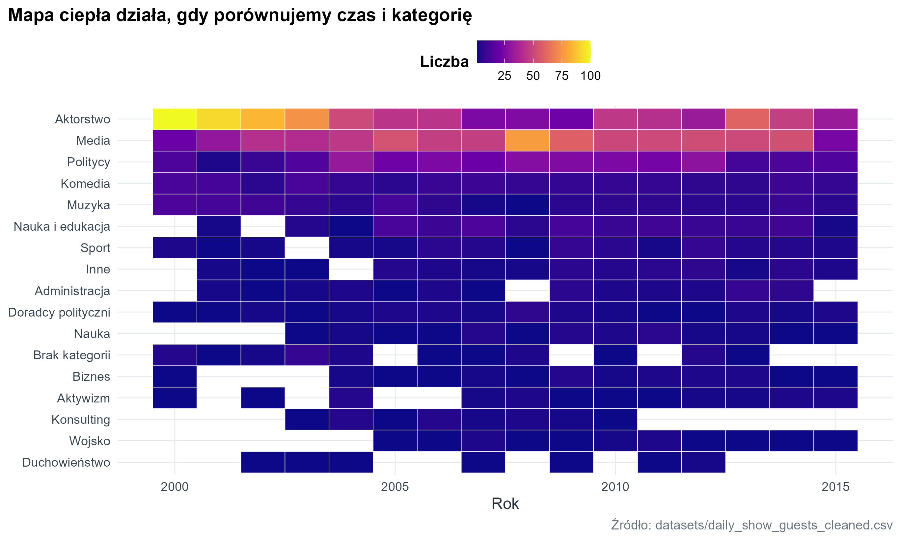

library(tidyverse)
library(here)
library(janitor)
source(here("R", "theme_course.R"))
theme_set(theme_course())5 Kategorie i rankingi
Wykresy kategorii działają najlepiej, gdy kategorie są posortowane według wartości, a liczba grup jest ograniczona do tego, co odbiorca realnie porówna.
school_grants <- readr::read_csv(
here("datasets", "schoolimprovement2010grants.csv"),
show_col_types = FALSE
) |>
janitor::clean_names() |>
select(-any_of("x1")) |>
filter(!is.na(model_selected), !is.na(award_amount)) |>
mutate(
award_amount_m = award_amount / 1000000,
model_selected = factor(
recode(
model_selected,
Closure = "Zamknięcie",
Restart = "Restart",
Turnaround = "Restrukturyzacja",
Transformation = "Transformacja"
),
levels = c("Zamknięcie", "Restart", "Restrukturyzacja", "Transformacja")
),
region = factor(
recode(
tidyr::replace_na(region, "Brak danych"),
Midwest = "Środkowy Zachód",
Northeast = "Północny Wschód",
South = "Południe",
West = "Zachód"
),
levels = c("Środkowy Zachód", "Północny Wschód", "Południe", "Zachód", "Brak danych")
)
)5.1 Wykres słupkowy (bar chart) z dobrą kolejnością
medals <- readr::read_csv(
here("datasets", "medals_by_country_2016.csv"),
show_col_types = FALSE
) |>
rename(country = `...1`) |>
pivot_longer(
cols = c(Bronze, Gold, Silver),
names_to = "medal",
values_to = "count"
) |>
mutate(
medal = factor(
recode(medal, Gold = "Złoto", Silver = "Srebro", Bronze = "Brąz"),
levels = c("Złoto", "Srebro", "Brąz")
),
country = forcats::fct_reorder(country, count, .fun = sum)
)medals |>
ggplot(aes(x = count, y = country, fill = medal)) +
geom_col(width = 0.72) +
scale_fill_manual(values = c(Złoto = "#D6A21E", Srebro = "#9AA3AA", Brąz = "#A97142")) +
labs(
title = "Sortowanie kategorii robi połowę pracy czytelnika",
x = "Liczba medali",
y = "Kraj",
fill = "Medal",
caption = "Źródło: datasets/medals_by_country_2016.csv"
)
5.2 Najważniejsze N kategorii zamiast pełnej listy
item_labels <- c(
Coffee = "Kawa",
Bread = "Chleb",
Tea = "Herbata",
Cake = "Ciasto",
Pastry = "Ciastko",
Sandwich = "Kanapka",
Medialuna = "Rogalik",
`Hot chocolate` = "Gorąca czekolada",
Cookies = "Ciastka",
Brownie = "Brownie",
Juice = "Sok",
Coke = "Cola",
Muffin = "Muffin",
Scone = "Scone",
Toast = "Tost",
Soup = "Zupa",
`Farm House` = "Chleb wiejski",
Croissant = "Croissant",
Truffles = "Trufle"
)
bakery_top <- readr::read_csv(here("datasets", "bakery.csv"), show_col_types = FALSE) |>
janitor::clean_names() |>
mutate(items = recode(items, !!!item_labels)) |>
count(items, sort = TRUE) |>
slice_max(n, n = 10) |>
mutate(items = forcats::fct_reorder(items, n))
bakery_top |>
ggplot(aes(x = n, y = items)) +
geom_col(fill = "#0072B2") +
labs(
title = "Ranking dziesięciu pozycji jest czytelniejszy niż pełna lista",
x = "Liczba transakcji",
y = NULL,
caption = "Źródło: datasets/bakery.csv"
)
5.3 Wykresy kategoryczne w ggplot2
Kategorie można pokazać na kilka sposobów. Pojedyncze obserwacje najlepiej widać na wykresie punktowym z losowym rozsunięciem punktów (strip plot), liczności na wykresie zliczeń (count plot), a typowe wartości na wykresie punktów ze średnimi (point plot).
school_grants |>
mutate(model_selected = forcats::fct_reorder(model_selected, award_amount_m, median)) |>
ggplot(aes(x = award_amount_m, y = model_selected, colour = region)) +
geom_jitter(width = 0, height = 0.16, alpha = 0.48, size = 1.7) +
scale_colour_course_d(name = "Region USA") +
scale_x_continuous(labels = scales::label_number(suffix = " mln", accuracy = 0.1)) +
labs(
title = "Losowe rozsunięcie punktów (jitter) odsłania pojedyncze obserwacje",
x = "Kwota grantu",
y = "Model interwencji",
caption = "Źródło: datasets/schoolimprovement2010grants.csv"
)
school_grants |>
filter(region != "Brak danych") |>
count(model_selected, region) |>
mutate(model_selected = forcats::fct_reorder(model_selected, n, .fun = sum)) |>
ggplot(aes(x = model_selected, y = n, fill = region)) +
geom_col(position = position_dodge(width = 0.75), width = 0.68) +
coord_flip() +
scale_fill_course_d(name = "Region USA") +
labs(
title = "Kolor rozdziela zliczenia według regionu",
x = NULL,
y = "Liczba szkół",
caption = "Źródło: datasets/schoolimprovement2010grants.csv"
)
ggplot2: liczba szkół według modelu i regionu.
school_award_summary <- school_grants |>
group_by(model_selected) |>
summarise(
n = n(),
mean_award_m = mean(award_amount_m),
se_award_m = sd(award_amount_m) / sqrt(n),
.groups = "drop"
) |>
mutate(
low = pmax(0, mean_award_m - 1.96 * se_award_m),
high = mean_award_m + 1.96 * se_award_m,
model_selected = forcats::fct_reorder(model_selected, mean_award_m)
)
school_award_summary |>
ggplot(aes(x = mean_award_m, y = model_selected)) +
geom_segment(aes(x = low, xend = high, yend = model_selected), colour = "#5B6770", linewidth = 1) +
geom_point(aes(size = n), colour = "#D55E00", alpha = 0.9) +
scale_size_continuous(range = c(3, 6), name = "Liczba szkół") +
scale_x_continuous(labels = scales::label_number(suffix = " mln", accuracy = 0.1)) +
labs(
title = "Średnia i przedział pokazują kategorię bez ukrywania niepewności",
x = "Średnia kwota grantu",
y = NULL,
caption = "Przedziały: średnia ± 1.96 SE; źródło: datasets/schoolimprovement2010grants.csv"
)
ggplot2: średnia kwota i przedział ufności.
5.4 Mapa ciepła (heatmap) kategorii
daily_show <- readr::read_csv(
here("datasets", "daily_show_guests_cleaned.csv"),
show_col_types = FALSE
) |>
janitor::clean_names() |>
mutate(
group = tidyr::replace_na(group, "Brak kategorii"),
group = recode(
group,
Academic = "Nauka i edukacja",
Acting = "Aktorstwo",
Advocacy = "Aktywizm",
Athletics = "Sport",
Business = "Biznes",
Clergy = "Duchowieństwo",
Comedy = "Komedia",
Consultant = "Konsulting",
Government = "Administracja",
Media = "Media",
Military = "Wojsko",
Misc = "Inne",
Musician = "Muzyka",
`Political Aide` = "Doradcy polityczni",
Politician = "Politycy",
Science = "Nauka"
)
)
daily_show |>
filter(year >= 2000) |>
count(year, group) |>
mutate(group = forcats::fct_reorder(group, n, .fun = sum)) |>
ggplot(aes(x = year, y = group, fill = n)) +
geom_tile(color = "white", linewidth = 0.2) +
scale_fill_viridis_c(option = "C", name = "Liczba") +
labs(
title = "Mapa ciepła działa, gdy porównujemy czas i kategorię",
x = "Rok",
y = NULL,
caption = "Źródło: datasets/daily_show_guests_cleaned.csv"
)
5.5 Zadanie
Wybierz dowolny zbiór danych z DATASETS.md, policz ranking kategorii i pokaż tylko 10 najważniejszych pozycji. Dodaj jedno zdanie: dlaczego pozostałe kategorie ukrywasz?